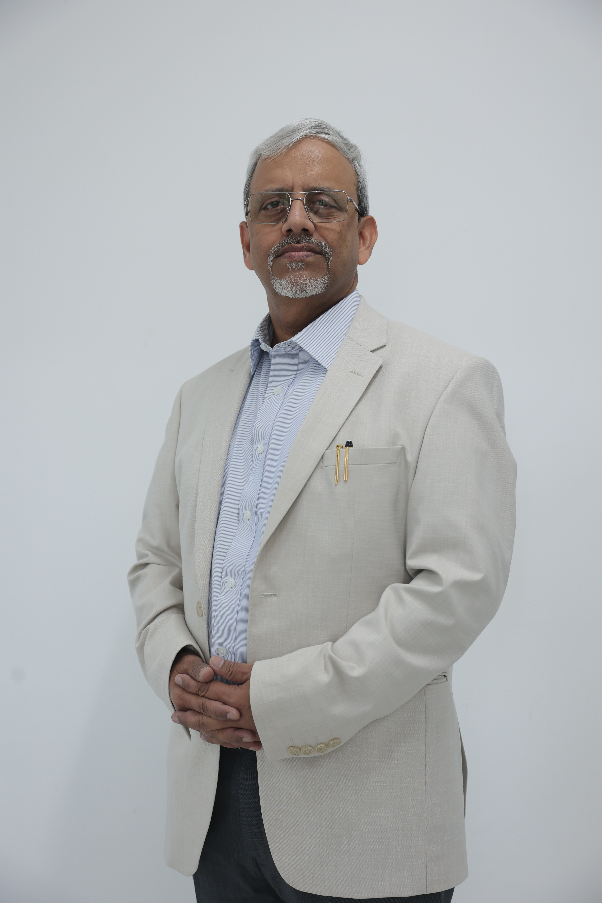
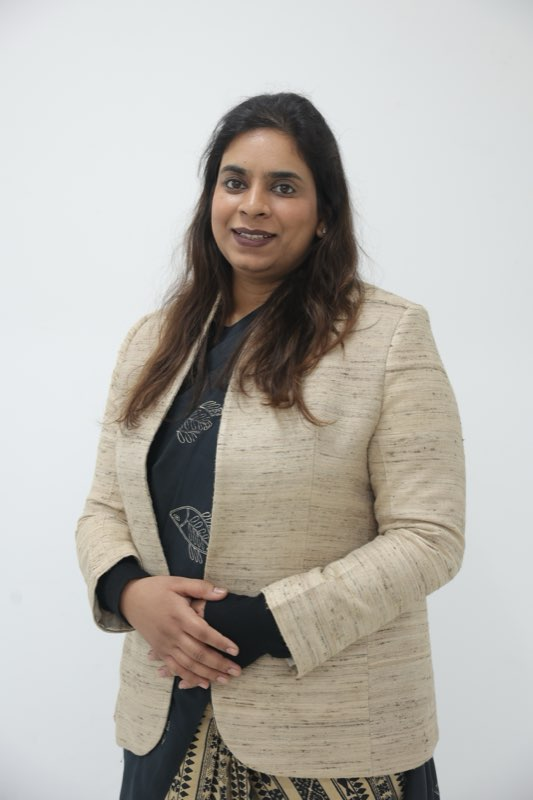

Action Cancer Hospital, New Delhi
Centre of Excellence for Blood Disorders
Internationally acclaimed haematologists and BMT specialists offering world-class care. Pioneers of Haploidentical Bone Marrow Transplantation in India.
- Centre of excellence for Haploidentical BMT
- Successfully done more than 125 Haploidentical BMT
- 75% long-term survival in high risk blood cancers
- Innovative immunotherapies to cure blood cancers
- More than 25 peer-reviewed publications
- The only Indian centre with international standing
About Bloods-R-Us
Internationally Acclaimed Excellence in Haematology & BMT
Welcome to the official website of Bloods-R-Us Centre of Excellence for Blood Disorders. Our Internationally and Nationally acclaimed team of Haemato-oncologists and Haematologists has a great profile and extensive experience in BMT.
Dr Suparno Chakrabarti and Dr Mahak Agarwal, along with a dedicated team of Haematopathologists, Paediatric Oncologists, Trained Transplant Nurses, Medical Oncologists, Radiation Oncologists, Surgical Oncologists, Microbiologist (Infection control specialist), Research Scientist, Technicians, Clinical Coordinators, Pharmacists, Dieticians, Physiotherapist and counsellors — ensure that each patient's journey from diagnosis, treatment, and long-term follow-up is integrated and seamless.
Our Team Includes
- Dedicated co-ordinators for BMT and non-BMT patients
- Dedicated team of highly skilled nurses
- Comprehensively trained dedicated housekeeping staff
- Team of trained technicians and scientists to run highly specialised BMT lab
- Haematopathologists, Paediatric Oncologists
- Medical, Radiation & Surgical Oncologists
- Research Scientists, Pharmacists, Dieticians & Counsellors
Why Bloods-R-Us
What Makes Us Different
Pioneers of Haploidentical BMT
First in India to establish a comprehensive Haploidentical BMT programme. Over 125 successful procedures with outcomes matching the best centres worldwide.
International Training & Standing
Our specialists trained at Birmingham, London, Italy, and Seattle's Fred Hutchinson Centre. The only Indian centre with international standing in Haploidentical BMT.
Research-Driven Care
25+ peer-reviewed publications. First in the world to identify specific risks in Haploidentical BMT. Every treatment protocol is backed by rigorous research.
Integrated Multidisciplinary Team
Haematopathologists, Paediatric Oncologists, Transplant Nurses, Research Scientists, and Counsellors — ensuring seamless care from diagnosis to long-term follow-up.
Conditions We Treat
Comprehensive Blood Disorder Care
From inherited disorders to aggressive blood cancers, our team delivers evidence-based, internationally benchmarked care for patients of all ages.
Genetic Blood Disorders
Inherited conditions affecting haemoglobin and blood cells. BMT offers up to 90% cure rates.
- Thalassemia
- Sickle Cell Anemia
Blood Cancers & Lymphomas
Leukemias, lymphomas, and myelodysplastic syndromes. 75% long-term survival with our approach.
- ALL
- AML
- CML
- Hodgkin's
- NHL
- MDS
Bone Marrow Disorders
When the bone marrow fails to produce healthy blood cells. BMT cures 70–90% of patients.
- Aplastic Anemia
- Bone Marrow Failure Syndromes
Immune & Metabolic Disorders
Autoimmune conditions, immunodeficiencies, and inherited metabolic diseases treatable with BMT.
- Autoimmune Diseases
- Primary Immunodeficiency
- Metabolic Disorders
Global Impact
Lives Transformed
Patients from across India and internationally trust Bloods-R-Us for life-changing treatment.
"I have taken treatment of Acute Myeloid Leukemia (AML) for my daughter. My daughter had a Successful Bone Marrow Transplant."
"The care and dedication shown by the entire Bloods-R-Us team is truly remarkable. From diagnosis to treatment and follow-up, every step was handled with professionalism and compassion."
"Success Story of Fatima Yahaya Zango from Nigeria. Treated for Sickle Cell Disease."
Bloods-R-Us
About Our Team & Foundation
Internationally and nationally acclaimed haematologists dedicated to excellence in blood disorder care and research.
Our Specialists
Meet the Team

Dr. Suparno Chakrabarti
Principal Director, Action Institute for Blood Diseases, Transplantation and Cellular Therapy (AIBTraCT) · Action Cancer Hospital
MBBS • MD (Internal Medicine, PGIMER, Chandigarh) • Doctor of Medicine (Hematopoietic Cell Transplantation, University of Birmingham, UK) • FRCPath (Haematology, Royal College of Pathologists, UK) • CCT (Haematology, UK)

Dr. Mahak Agarwal
Associate Consultant, Action Institute for Blood Diseases, Transplantation and Cellular Therapy (AIBTraCT) · Action Cancer Hospital
MBBS • MD • PGDMLS (Symbiosis Centre for Health Care, Pune) • PGDHHM (Symbiosis Centre for Health Care, Pune) • Fellowship in Clinical Hematology & BMT (Dharamshila Cancer Hospital, New Delhi) • Specialized Training in GMP-Based Cellular Therapy • Clinical Observer, ACTREC, Tata Memorial Centre, Mumbai
Full Team Composition
Dr Suparno Chakrabarti • Dr Mahak Agarwal • Haematopathologists • Paediatric Oncologists • Trained Transplant Nurses • Medical Oncologists • Radiation Oncologists • Surgical Oncologists • Microbiologist (Infection Control Specialist) • Research Scientist • Technicians • Clinical Coordinators • Pharmacists • Dieticians • Physiotherapist • Counsellors
In Memoriam
Manashi Chakrabarti Foundation
A tribute to the life, spirit, and enduring legacy of Manashi Chakrabarti — whose memory inspires our mission of research and care for children with life-threatening blood disorders.
Born as the first child to Ganendranath Chakrabarti and Uma Devi in 1939, Manashi was very special to her parents. Her father, an eminent pathologist, noted some rare talents in the young girl – a mind that could perceive the abstract and express it through her paintings and sketches. As is the story of many such families of her time, Manashi's talents were suffocated by the existence of a middle class family that found painting to be an unnecessary pastime.
At the age of 20, Manashi got married to Bimalangshu. Bimalangshu hailed from a family in Rajshahi, a part of East Bengal that became East Pakistan in 1947. Bimalangshu, a bright medical student at that time, joined the army and became a distinguished soldier and anaesthetist. Manashi adapted to living in a large joint family, but, the promise and talents were submerged in her chores. She raised two children, Mousumi and Suparno. In 1974, she lost her younger brother at the age of 21. This changed her life forever. She started to seek the truth about this world and the hereafter.
Ganendranath had retired as a frustrated academic pathologist, getting little recognition for his brilliance. This pained Manashi. She felt that her children must fulfil the academic promise that she and her father were not allowed to express. Suparno went abroad to earn further expertise in medicine, promising to come back to her side and fulfil the family's mission of research in medicine.
On 13th June 2005, Bimalangshu was admitted to the hospital intensive care with a chest infection. Manashi was by his side for the next few days. On 17th June, she suffered a massive heart attack, which she had smilingly defeated when only a few days old, to grace this world with all her talents.
Death could not have taken Manashi's legacy away from us. It will live on with this charity founded by her children to fulfil the family's mission of research in medicine and the care of children with life-threatening blood disorders.
'It's time to say good-bye
But, please don't cry.
When I have left for a different shore,
Just gently shut the door.
Yet let the memories stay,
Bright as the sunshine may.
Then, every drop of rain you'll find,
Leaves a rainbow behind.'
Manashi Chakrabarti Foundation
Research Activities
Supporting the cause of children suffering from blood disorders
Blood cancers account for half of childhood malignancies. They are broad of two types, myeloid and lymphoid. Acute Lymphoblastic Leukemia or ALL account for 90% of blood cancers between the ages of 1-16 years. Diligent research and exhaustive clinical trials have now made it one of the most curable cancers. In the western world, 80% of children diagnosed with ALL get cured with chemotherapy alone. Of the other 20% which relapse, 50-60% are cured with further treatment including a bone marrow transplantation.
In developing countries including India, the majority of children with ALL fail to access proper healthcare facilities and even if they do so, a large number of the default treatment due to logistic and financial constraints.
Our endeavor is to provide awareness, access, and support to all such children who could lead a happy and healthy life and productively contribute to the development of the society. Thus, the journey does not end with successful treatment. That is the beginning of a long and productive life through proper guidance and support for educational and psychological rehabilitation.
The success in treatment of cancer depends on the understanding and amalgamation of individual biology and the environment we live in. The factors predisposing to childhood cancers are poorly understood. In a country where air and water pollution is on the rise and many carcinogenic substances are used in daily life without regulation, we need to know the cause of blood cancers in our children.
Disease biology differs from geographical and ethnic variations. Little do we know if the biology of childhood leukemia in India is different from that in the west. Uncompromised research on each of these areas is the need of the hour. Our organization is striving to gather the infrastructure and human resources to start answering these questions. We invite all interested researchers, collaborators, philanthropists to join us in this endeavor.
Research on Bone Marrow Transplantation (BMT) in Children
BMT from a donor or Allogeneic BMT is often the only curative treatment for advanced blood cancers. If a matched donor is not available in the family, the patient can go for a transplant from an unrelated donor.
We inherit half of our HLA genes from each parent and pass it on likewise to our children. Thus, HLA or tissue type is 50% matched between the children and their parents. This is called a Haploidentical match.
We were the first in the world to point out that this approach for children was wrought with high risks of rejection and Graft Versus Host Disease (GVHD). Through years of diligent clinical research, we have now developed the most effective way of transplanting such children from a parent or a haploidentical donor. This discovery has changed the lives of many such children. Our organization has provided expertise and logistic support for such research activities over the last decade.
Surviving after Blood Cancer
Following the ordeal of going through treatment for blood cancer, the biggest challenge lies in rehabilitation and long-term surveillance. Growth and mental development of the survivors of childhood cancer is of paramount importance.
In addition, cancer drugs can also have an effect on the heart and the lungs and need regular monitoring. Society at large should take the responsibility of rehabilitating the survivors of childhood cancer, so that they can take up a lead role in society in future.
A life free of Thalassemia
β-Thalassemia Major is the commonest genetic disorder in India. About 10,000 children with thalassemia are born every year. Despite the improvement in supportive care, the long-term outcome of children with transfusion-dependent β thalassemia in developing countries is disappointing.
Recent data from WHO confirms that about 12% of children born with transfusion-dependent β thalassemia are actually transfused, and less than 5% receive adequate iron chelation. BMT from a matched sibling donor was established as a curative treatment for this condition in the early eighties. However, only 10-20% of thalassemia sufferers find a matched family donor.
Our endeavor is to develop facilities for transfusion and chelation for children under the optimum guidance of pediatric hematologists. We also provide expertise in curative treatment for this condition.
Clinical Reference
Blood Disorder Information
Comprehensive clinical information authored by Dr. Suparno Chakrabarti and Dr. Mahak Agarwal.
Education
BMT Knowledge Centre
Comprehensive information about Bone Marrow Transplantation — what it is, how it works, and who needs it. Written by Dr. Suparno Chakrabarti.
Foundation
What is Bone Marrow Transplantation?
Bone Marrow Transplantation is a procedure, where healthy stem cells are transplanted into a patient's body after appropriate treatment. Healthy stem cells can be collected from the patient, when he becomes disease free after treatment. They can also be collected from fully / half HLA matched family donor, unrelated donor and cord blood. Stored stem cells of the patient / donor / cord blood are transfused into patient's blood stream, quite similar to blood transfusion.
What are Stem Cells?
Stem cells are the most primitive cells which can differentiate into various other dedicated cells, such as nerve cells, bone cells, liver cells, blood cells etc. The most primitive stem cell gets committed to organ-specific stem cells and thus forms either blood stem cells or nerve stem cells.
Sources of Blood Stem Cells
Bone Marrow: The spongy material inside large bones of adults and all bones of children is called bone marrow, which is a normal reserve for blood stem cells. Depending on body's requirement, stem cells can produce desired number of Red blood cells, white blood cells and Platelets. When a patient needs blood stem cells, they can be collected from healthy donor's hip bones under anesthesia.
Peripheral Blood: Normally, there is only an occasional blood stem cell in our circulation. However, when a blood growth factor (G-CSF) is injected, it stimulates the stem cells from the bone marrow to spill over in the circulation. If we carry out a procedure called Apheresis (similar to dialysis), stem cells can be collected from the peripheral blood.
Umbilical Cord Blood: Placenta along with the umbilical cord are waste products of pregnancy. However, in the mid-1980s, it was discovered that they are a rich source of blood stem cells. These cells can be collected after birth and stored for later use in a patient.
Types
Types of Bone Marrow Transplantation
Allogeneic BMT
The blood stem cells are obtained from the peripheral blood or bone marrow of a donor who is suitably matched to the patient. The diseased or failing bone marrow is replaced by healthy marrow from a normal donor. This process cures the underlying disease.
Autologous BMT
Standard dose of chemotherapy cannot always cure a cancer. High dose is often needed. However, such high doses damage the patient's bone marrow irreversibly. Patient's own blood stem cells are collected before administering high dose chemotherapy and stored. The stored blood stem cells of the patient are transfused back after Chemotherapy / Radiotherapy.
Indications
Conditions Treated with BMT
Transplantation of Bone Marrow, also termed as Stem Cell Transplant, is a complex process where the damaged or infected bone marrow is replaced by healthy ones. This process is implemented once the patient has been treated with high doses of chemotherapy and radiation treatment.
Bone marrow is a soft, spongy tissue within the bones which produces cells together with white and red blood cells along with platelets. When this bone marrow gets injured, it is no longer capable of producing these red and white blood cells. As a result, you may experience some severe consequences like infections, weakness, anemia, excessive bleeding and possibly even death.
Who Needs Bone Marrow Transplantation?
Bone Marrow is an amazing organ spread all through the body, producing millions of cells every moment of our life to keep us well and healthy. Any disease affecting the bone marrow affects our entire body. Replacing the diseased or failing bone marrow with healthy marrow stem cells is the process of Bone Marrow Transplantation.
Blood Cancers: Any blood cancer (leukemia) or lymph gland cancer (Lymphoma) which is not completely cured with chemotherapy or recurs after completion of chemotherapy (relapse), can be cured with Allogeneic or Autologous BMT in about half of the patients.
Thalassemia and Other Genetic Conditions: In these conditions, the defective bone marrow cells can be killed by chemotherapy and replaced by healthy bone marrow cells from a healthy donor. This can be cured in about 90% of the patients.
Aplastic Anaemia and Related Conditions: In these conditions, the bone marrow does not produce enough stem cells and healthy stem cells can be transplanted from a healthy donor. This is also curative in about 70-90% of patients.
Other Cancers: Many other cancers which do not arise from the bone marrow can be cured by infusing patient's own stem cells after high dose chemotherapy.
The Journey
The BMT Process — Four Stages
Dr. Suparno Chakrabarti explains the four stages involved in Bone Marrow Transplantation.
One will undergo complete medical check-up to evaluate one's suitability to go through the BMT procedure. This involves the following:
- Blood Tests
- Chest X-ray and CT Scans
- Tests to assess the condition of heart and lungs
- Bone Marrow Tests
Patients will be counselled in detail about the procedure, the complications, the chances of success, the cost and the possible length of stay in the hospital. Patient will be encouraged to go through the educational material/booklet and discuss any queries or doubts that he/she might have.
High dose of chemotherapy or radiotherapy is given to destroy the diseased marrow or destroy the cancer cells and make space for the new bone marrow cells. It also suppresses the immunity of the patient so that the new bone marrow is not rejected.
The Transplant Procedure: The transplant procedure is actually fairly simple — the stem cells or bone marrow cells to be transplanted are given as a blood transfusion through the central line. This usually takes from one to several hours. Just before the infusion, the patient may be given medication to help avoid any reaction. A monitor is used to check breathing, heart rate and blood pressure during the procedure.
After high dose chemo-radiotherapy the blood stem cells are destroyed and normal blood cells are not produced. The patients need to be kept in a clean room within the BMT unit in strict isolation during this time. They also need a lot of blood and platelet transfusion. Most patients get serious infections during this period and need treatment with antibiotics.
Early Phase (first 3 months): There are two types of white blood cells: neutrophils and lymphocytes. Once the neutrophil count is above the critical value of 500 cells per microlitre, the patient can come out of critical isolation. This is called engraftment — the first sign that the transplanted blood stem cells are functioning. There is also a risk of graft-versus-host disease (GVHD) at this stage.
Late Phase (3 months–12 months): The immunity against viruses takes a very long time to recover. Even though some immunity is restored, the patient is still at risk of infections with viruses and fungus. This is more so if they are being treated for GVHD, which can become chronic and lingering. If the patient is well, the frequency of check-ups and blood tests reduce over several months.
Referral Resource
For Doctors
Clinical reference guide for haematologists, oncologists, and general physicians considering BMT referral.
Clinical Reference
When to Refer for BMT
A consolidated reference of BMT indications organised by condition, extracted from Dr. Suparno Chakrabarti's clinical guidelines.
| Condition | BMT Indication | Type of BMT | Timing |
|---|---|---|---|
| Thalassemia Major | Only curative treatment | Allogeneic | Best age 2–5 years; earlier is better |
| Sickle Cell Disease | Severe disease; 90% cure with matched donor | Allogeneic (incl. Haploidentical) | Before end-organ damage |
| Aplastic Anemia (Severe/Very Severe) | Treatment of choice for young patients with matched sibling donor | Allogeneic | Early; avoid multiple transfusions |
| ALL — High Risk / MRD+ | High Risk ALL; positive MRD after chemotherapy; relapsed ALL | Allogeneic | First complete remission |
| AML (non-APML) | All AML except good risk or APML; relapsed AML | Allogeneic | First complete remission |
| CML — TKI-resistant / Accelerated / Blast Crisis | Failed TKI therapy; accelerated phase; blast crisis | Allogeneic | As soon as failure of TKI confirmed |
| Hodgkin's Lymphoma (Relapsed) | Relapsed/refractory HL; after autologous BMT failure | Autologous → Allogeneic (if relapsed after auto) | After salvage chemotherapy |
| NHL (Relapsed/High Risk) | Relapsed NHL; T cell NHL; Mantle Cell; relapsed low grade | Autologous → Allogeneic (if indicated) | PET-negative before BMT = 80% cure |
| MDS | Only curative treatment; early before infections/iron overload | Allogeneic | Before life-threatening complications |
| Primary Immunodeficiency (SCID etc.) | Definitive cure; urgently at diagnosis for SCID | Allogeneic | Ideally <3.5 months for SCID |
| Inherited Bone Marrow Failure | Before onset of leukemia/MDS or excessive transfusions | Allogeneic | Early, as an elective procedure |
| Inherited Metabolic Disorders | Before significant neurological damage | Allogeneic | Early childhood |
| Autoimmune Disease (Severe) | Scleroderma, MS — when conventional treatments fail | Autologous or Allogeneic | Before permanent organ damage |
Our Expertise
Research & Credentials
Led by internationally trained specialists. Meet our full team →
25+ Peer-Reviewed Publications
Our team has published extensively on Haploidentical BMT, contributing to the global knowledge base on this procedure. We were the first in the world to point out the specific risks in Haploidentical BMT for children and have developed the most effective approach for transplanting children from a parent or haploidentical donor.
The only Indian centre with international standing in Haploidentical BMT research.
Get Started
Refer a Patient
Send a Referral
Teleconsultation Available
We offer teleconsultation for remote physician-to-physician consultation on complex cases and BMT suitability assessment.
Modes: Phone call · Text/WhatsApp · Video call
Contact for ReferralInformation for Patients & Families
For Patients
Guides written by Dr. Suparno Chakrabarti and Dr. Mahak Agarwal to help patients and families prepare for Bone Marrow Transplantation.
For Patients
Your BMT Journey
What to expect before, during, and after your Bone Marrow Transplant.
Once transplanted bone marrow starts to grow, or engraft, the white blood cell count will rise. Once the white blood cell count reaches safe levels, the patient can be moved from the high-level isolation (clean room) to the low-level isolation. In low-level isolation, standard precautions are taken like hand washing and not visiting if sick. This period is also known as Step down isolation.
If you do not have a double lumen central venous catheter, you need one for the transplant period. The transplant doctor or an anaesthetist will place the line in the operating room, before the conditioning starts.
This CVL remains in place for the entire transplant period. It may be used to give intravenous (IV) fluids, medications, blood products, and for the transplant itself. It is also used to draw most blood samples. The BMT nurses will flush the line with a medication (heparin) to keep it from clotting.
When the transplant doctor decides that the line is no longer needed, it will be removed in the operating room or at the bedside.
For Patients
Clean Room Guide
Protective isolation details, precautions, and equipment in the BMT Unit.
Transplant patients have very low immunity to fight bacterial, viral and fungal infections and therefore need to be isolated into CLEAN ROOMS which will protect them from infections.
Air Handling Unit (AHU)
Each room of the BMT Unit has its own dedicated Air Handling Unit (AHU) to provide 10–15 Hepafiltered fresh air changes per hour. This means the fresh air entering the patient's room is first treated through special filters. Treated fresh air then passes through 0.3 Micron High Efficiency Particulate Air Filter (HEPA). HEPA removes all the bacteria, viruses and fungus. This hepafiltered air passes through a laminar floor to reach the patient's room at the desired humidity and temperature.
Automatic and Selective Control System
Automatic and selective control system provides positive air pressure in the BMT room compared to ante room and the BMT corridor. This has been done to ensure that, on opening the door of the BMT Room or the ante room, no outside air from BMT corridor or the ante room enters the BMT room.
Anteroom
Ante room is a small room between the corridor and the BMT room for maintaining positive air pressure in the BMT room.
Stainless Steel Doors, Vinyl Flooring and Cladding of Walls
Stainless steel doors and vinyl surfaces are most practical to clean with disinfectants to maintain high standards of hygiene and infection control.
- Do not carry any valuables e.g. jewellery, cash etc. to the BMT room
- Ring the bell outside the BMT unit, so that the nurse can decide whether to let you in or not.
- If allowed, keep your cell phone, toys, games, pictures etc. in the pass box fitted with ultraviolet light for 20 minutes before taking them to the BMT room.
- Enter the change room
- Change shoes
- Change into sterile clothes, wear cap and mask.
- Wash your hands with soap and water by following 6 step hand wash instructions, written on the wall above the sink.
- Use all the three disinfectants (placed above the sink) one by one. Dry your hands
- Enter the BMT corridor.
- Enter the Anteroom, scrub again as mentioned above, wear a sterile gown and then enter the BMT room.
Attendants
No attendants are allowed except with children and very sick patients with the doctor's permission. Only one attendant is allowed in the BMT unit at any time.
Toilets
Attached toilet is exclusively meant for the patient. Only treated water should be used for patient's bath and mouth wash.
Food
No outside food is allowed inside the BMT room. Patients will be served prescribed, pressure cooked and microwaved food inside the BMT room. Attendants will be served food in the BMT pantry as per their order.
Note: BMT Nurse will explain all the above in detail to the patient and the family for their full cooperation.
Equipment
BMT Unit is equipped with a dedicated X-ray machine, ultrasound machine, dialysis machine and a ventilator to handle any medical emergency.
Furniture and Furnishing of BMT Room
- Centralised oxygen, suction system with double outlets
- State-of-art, six parameter monitors for monitoring heart rate, breathing rate, blood pressure, oxygen saturation and ECG 24x7.
- Infusion pumps
- Syringe pumps
- C.C. TV monitoring system for 24x7 vigilance of the patient
- Television
- Telephone
- Patient bed, bedside locker and desk
- Attendant bed
- Two trolleys for medicines/dressing etc.
For Patients
Nutrition Guidelines
Diet guidelines, restrictions, and nutritional support during BMT.
During bone marrow transplantation, the bone marrow is destroyed by high doses of chemotherapy. This causes a decrease in white blood cells, which help to fight infections. Because of this, it is very important to eat foods that are less likely to contain high levels of bacteria.
When Patients are admitted in the isolation room, they are placed on a low bacteria diet. Most food items served in the hospital are pressure cooked and microwaved before serving to patients.
Home prepared foods are NOT allowed. Commercially packaged items are ONLY allowed after they have been approved by the dietician or nurse. Food should NOT be left at room temperature for longer than one hour.
Eating well is very important during transplant and recovery. Patients may have low appetite, change in taste, dry mouth and/or nausea. There may be times when Patients may not feel well enough to eat. To maintain the nutrition, TPN (Total Parental Nutrition) or tube feeding is started.
Low Bacteria Diet Guidelines
- No restaurant food, take out, cafeteria food or vendor food is allowed.
- All foods must be cooked thoroughly. Avoid rare to medium cooked meats and fish.
- Herbs, spices and pepper should not be added to food after it is cooked, but are allowed when cooked with the food.
- Avoid raw fruits and vegetables including salads, garnishes, stir-fried vegetables, egg rolls and any fruit garnish on a dessert.
- Avoid foil-sealed plastic cups of juices because they do not have best before date.
- Avoid food containing raw eggs including soft cooked eggs.
- Dried fruits, nuts and seeds are not allowed unless cooked in a food item.
For Donors
Donor Guide
Donor for BMT has to be matched with the patient in their 'tissue type'. This is confirmed by typing their HLA antigens.
Family Donor — Fully HLA Matched
Within a family, there is about 25–30% chance of finding such a match in a brother or a sister. If there is no match within the close family, the chances of finding a fully HLA matched donor in distant relatives is remote.
Half-Matched / Haploidentical
We inherit two sets of HLA ANTIGENS; one from each parent. Thus, parents are always half matched with us. In addition, even if the brothers and sisters are not fully matched with the patient, there is 90% chance that they shall be half-matched. BMT from a half matched or HAPLOIDENTICAL donor is feasible in centres with adequate infrastructure and expertise.
Volunteer Unrelated Donors
To find a match with a random person is less than one in a billion. However, if we screen million people of similar ethnic background, we might find a close match. Based on this concept, volunteer unrelated donor registries have been set up in all countries. In India also, we have many volunteer unrelated donor registries. It takes a few months to search for an HLA matched donor in these registries.
Hundred milliliter to a litre of bone marrow (depending on the age of the patient and the donor) is removed from the donor's hip bones under general anesthesia. It is an extremely safe procedure and is completed within two to three hours. The donor can be discharged on the same day or next morning and he can go back to his work within two to three days. Bone marrow is naturally regenerated in the body within 2 to 3 weeks.
No. The donor receives an injection of a growth-factor for 4 days and on the fifth day the donation of blood stem cells is done. It is similar to a long blood donation through a machine and no operation or general anaesthesia is required. The donor can go back to work on the same day.
Patient Testimonials
Patient Stories
Real stories from patients and families who have been treated at Bloods-R-Us under Dr. Suparno Chakrabarti and Dr. Mahak Agarwal.
"My father was diagnosed with Mantle Cell Lymphoma on 3rd Feb 2021. My father start receiving his treatment from Dr. Suparno and his team and he is fine now with his health."
"The care and dedication shown by the entire Bloods-R-Us team is truly remarkable. From diagnosis to treatment and follow-up, every step was handled with professionalism and compassion."
"I am very satisfied with my course of treatment and the doctors and staff under Dr. Suparno sir are very good and cooperative."
"The treatment was done by expertise doctors."
"I have taken treatment of Acute Myeloid Leukemia (AML) for my daughter. My daughter had a successful Bone Marrow Transplant."
"Story of Mr. Jagdish Sharma, Lymphoma Patient after his successful Bone Marrow Transplant."
"Success Story of Fatima Yahaya Zango from Nigeria. Treated for Sickle Cell Disease."
Reach Us
Contact Bloods-R-Us
Book an appointment, ask a question, or request a teleconsultation. We are here to help.
Find Us
Location & Hours
10:00 AM – 1:00 PM & 6:00 PM – 8:00 PM
Teleconsultation
Your convenience is our priority! Telemedicine allows you to consult with us from the comfort of your home, and without any delays.
Available modes:
Phone call · Text/WhatsApp chat · Video call
Telemedicine is not a substitute for in-person care. For serious medical conditions, please go to the nearest emergency room.
Get in Touch